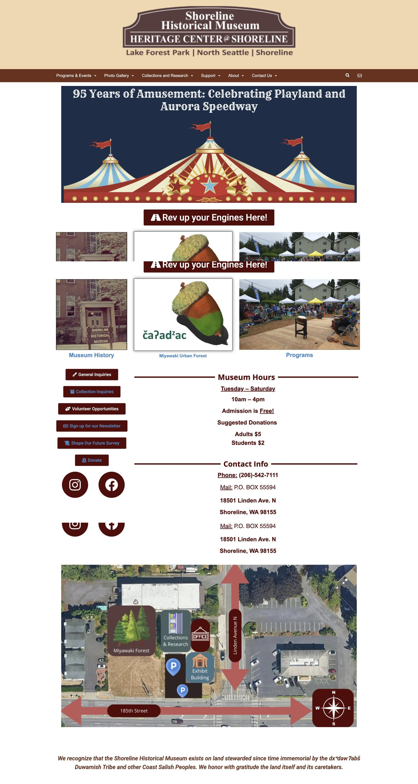
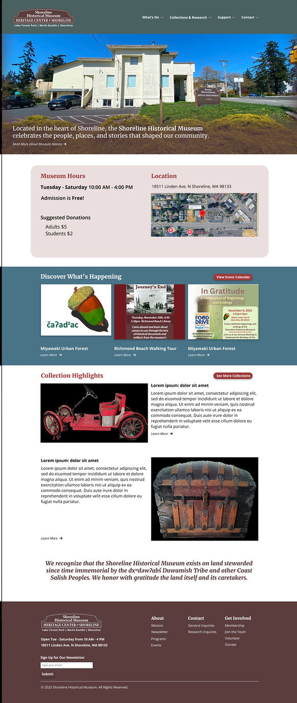
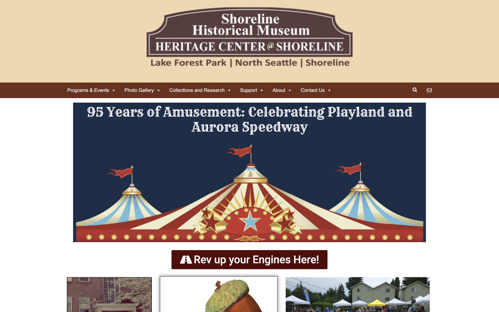
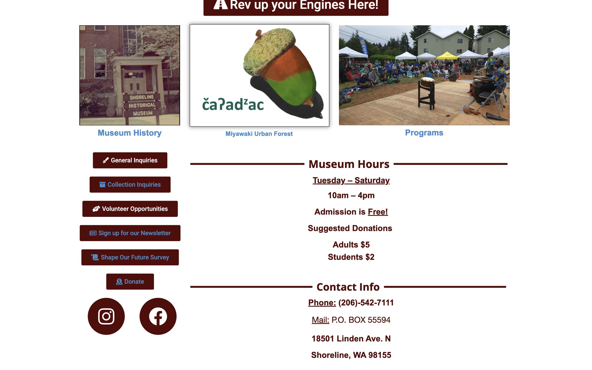
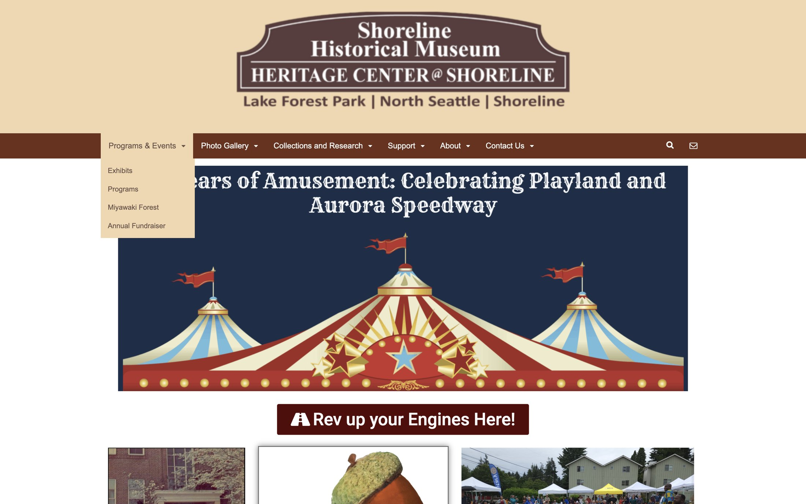
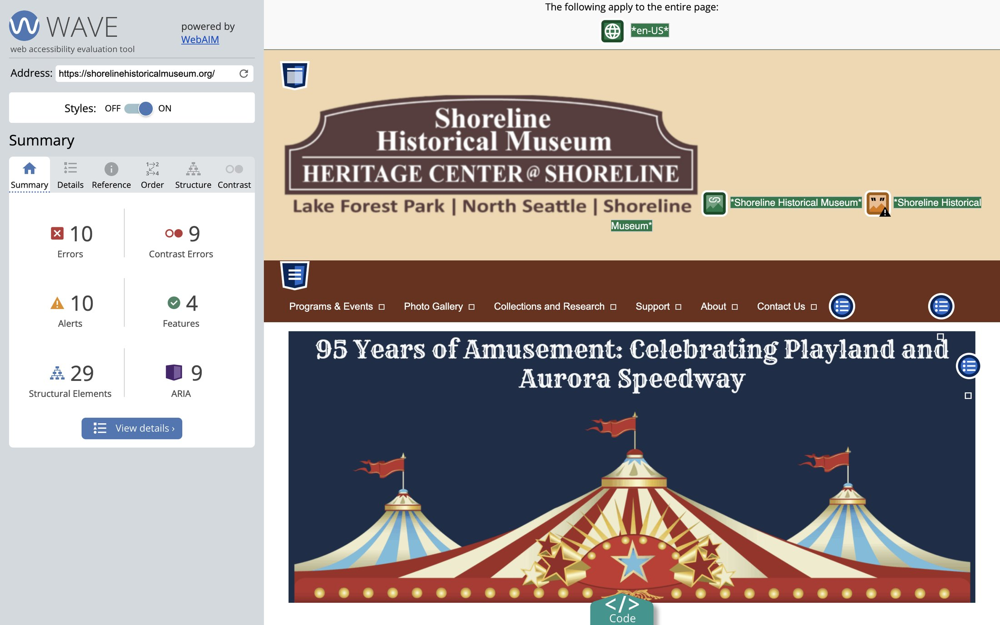

A community museum's website, redesigned around what 35 visitors, volunteers and staff said about the old one.


I started by going through the existing site screen by screen. A tall header filled the first view, the hours and contact details sat far down the page beside a stack of buttons, and blue link text ran on tan and brown backgrounds.



I ran the page through WAVE, a web accessibility evaluation tool, to see what a screen reader or a low-vision visitor would run into. It also raised 10 alerts.

A Google Form went out in July 2025, shared with a QR code. Visitors, Shoreline residents, volunteers, museum staff, educators, a donor and a member replied.
The site was not broken: most people rated it 3 or 4. The opportunity was in the middle, turning "adequate" into easy.
People also named what to keep: "Has all the info I'm looking for", "It's minimal", "Fast and responsive". The content was right. The presentation was the problem, and the brown tones divided opinion.
I wrote the plan up as a proposal for the museum on 14 December 2025, with the open questions listed for their approval: the homepage wording, the colour direction and the phased approach.